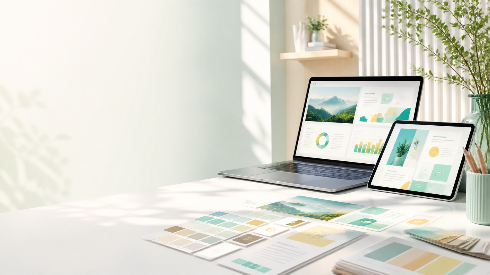

PPT 整套定制
根据主题、受众和目标，从大纲、页面结构到视觉风格完整搭建，适合路演、汇报、提案和课程。

你给素材、想法或旧版 PPT，我们负责梳理逻辑、重做版式、统一风格，并交付可继续编辑的源文件。
Services
深界覆盖从内容结构到视觉落地的完整链路。你可以只做单页美化，也可以交给我们完成整套演示设计。
根据主题、受众和目标，从大纲、页面结构到视觉风格完整搭建，适合路演、汇报、提案和课程。
保留原有内容，重排版式、配色、字体、留白和页面层级，让旧稿快速变得干净、统一、专业。
围绕卖点、证据、市场、商业模式和行动召唤重组叙事，让方案更适合投资、招商、销售和宣讲。
把工作汇报、培训课件和项目复盘整理成清晰页面，强化重点、节奏和阅读舒适度。
把复杂数据、流程、矩阵和时间线转成更易读的信息图页面，减少文字堆叠。
定制封面、目录、章节、数据、对比、结论等页面模板，方便团队后续持续复用。
Before / After
Use Cases
Process
明确受众、使用场景、页数、截止时间和你想要的风格方向。
将素材整理成大纲，压缩冗余内容，确定每页的核心信息。
完成封面、内页、图表、版式和配色，让整套 PPT 风格统一。
根据反馈微调，并交付可编辑 PPTX、PDF 预览和复用建议。
Deliverables
我们希望你拿到的不只是“好看的 PPT”，而是一套可以继续维护和复用的表达资产。
保留文本、图表、形状和页面元素的可编辑性，方便后续修改。
用于对外发送、会议预览或打印，减少字体和版本差异造成的错位。
给出配色、字体、组件和常用页面的复用方式，方便下一次继续沿用。
Plans
适合封面、目录、图表页、结论页等重点页面。
推荐
适合路演、汇报、提案、课程和产品介绍。
适合每月都有汇报、课件或营销材料的团队。
FAQ
可以。我们可以先帮你整理内容结构，再转成 PPT 页面。如果素材不完整，会先列出需要补充的信息。
可以。我们会尽量保留原文，只优化版式、配色、图表、留白和页面一致性。
默认交付可编辑 PPTX，并可附 PDF 预览。复杂视觉元素会尽量保持可修改。
会。涉及商业计划、客户信息、内部数据的材料，会按你的要求控制留存和传播范围。
Start
填写几个关键信息，页面会整理出一段可发送给深界的需求文本。你可以直接复制给我们做初步沟通。